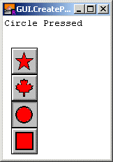

GUI.CreatePictureRadioButton (x, y, picture : int, joinID : int, actionProc : procedure x ()):int GUI.CreatePictureRadioButtonFull (x, y : int, shortcut : char, mergePic : boolean) : int
Creates a picture radio button and returns the button's widget ID. Picture radio buttons behave like picture buttons (see GUI.CreatePictureButton) except that they have the "radio" property. That is, one of the buttons in the radio group is always selected, and if another button in the group is selected, the previously selected button is unselected. A common example is the buttons on a paint program that indicate the current shape being painted. The maple leaf button is currently selected. If the star button is selected by the user, the maple leaf button becomes unselected. For picture buttons, the selected button appears depressed.
A radio group is created by first creating a single radio button. To add another button to the group, a second radio button is created specifying the first radio button in the joinID parameter. Subsequent radio buttons are added, each specifying a previous member of the group in the joinID parameter. The picture must be created by the program beforehand using Pic.New or Pic.FileNew. The resulting picture can then be used as a parameter to GUI.CreatePictureButton. In general, pictures should be a maximum of about 50 pixels high and wide, although there is no built-in limit in the GUI library. The x and y parameters specify the lower-left corner of the picture radio button. If these are both 1 and joinID is not zero, then the button will be placed directly below the previous picture radio button in the group. The picture parameter specifies the picture ID of the picture to be displayed on the button. (Note that, in general, this picture should be fairly small.) The picture ID is received from a Pic.New or Pic.FileNew call. Do not call Pic.Free for this picture ID until the button has been disposed of by calling GUI.Dispose. The joinID parameter specifies a member of the radio group that this widget should join. A joinID of 0 sepecifies this radio button is not a member of any group. The actionProc parameter specifies the name of a procedure that is called when the picture button is pressed. For GUI.CreatePictureRadioButtonFull, the width and height parameters specify the width and height of the button. If they are set to 0, then the picture radio button is automatically sized to fit the picture. If you need to know the precise size of the button, use the GUI.GetWidth and GUI.GetHeight functions. If width and height are larger than the picture, the picture is centered in the button. The shortCut_parameter is the keystroke to be used as the button's shortcut. The mergePic parameter specifies whether anything that was the background colour in the picture (usually colour 0) should be set to the background colour of the button (which is usually gray). This defaults to true for CreatePictureRadioButton_.

The following program creates and displays for picture radio buttons.
import GUI
View.Set ("graphics:150;200,nobuttonbar")
const size : int := 25 % The buttons size.
const border : int := 3
var starButton, mapleButton, circleButton, squareButton : int
var starPic, mapleLeafPic, circlePic, squarePic : int
procedure StarPressed
Text.Locate (1, 1)
put "Star Pressed "
end StarPressed
procedure MaplePressed
Text.Locate (1, 1)
put "Maple Pressed "
end MaplePressed
procedure CirclePressed
Text.Locate (1, 1)
put "Circle Pressed"
end CirclePressed
procedure SquarePressed
Text.Locate (1, 1)
put "Square Pressed"
end SquarePressed
% Create the pictures.
% The star.
Draw.Star (border, border, border + size, border + size, black)
Draw.Star (border + 1, border + 1, border + size - 1,
border + size - 1, black)
Draw.FillStar (border + 2, border + 2, border + size - 2,
border + size - 2, brightred)
starPic := Pic.New (0, 0, 2 * border + size, 2 * border + size)
% The mapleleaf.
Draw.FillBox (border, border, border + size, border + size, white)
Draw.MapleLeaf (border, border, border + size, border + size, black)
Draw.MapleLeaf (border + 1, border + 1, border + size - 1,
border + size - 1, black)
Draw.FillMapleLeaf (border + 2, border + 2, border + size - 2,
border + size - 2, brightred)
mapleLeafPic := Pic.New (0, 0, 2 * border + size, 2 * border + size)
% The circle.
const radius : int := size div 2
Draw.FillBox (border, border, border + size, border + size, white)
Draw.Oval (border + radius, border + radius, radius, radius, black)
Draw.Oval (border + radius, border + radius, radius - 1, radius - 1,
black)
Draw.FillOval (border + radius, border + radius, radius - 2,
radius - 2, brightred)
circlePic := Pic.New (0, 0, 2 * border + size, 2 * border + size)
% The square.
Draw.FillBox (border, border, border + size, border + size, white)
Draw.Box (border, border, border + size, border + size, black)
Draw.Box (border + 1, border + 1, border + size - 1,
border + size - 1, black)
Draw.FillBox (border + 2, border + 2, border + size - 2,
border + size - 2, brightred)
squarePic := Pic.New (0, 0, 2 * border + size, 2 * border + size)
% Create the picture buttons.
Draw.Cls
starButton := GUI. CreatePictureRadioButton (10, maxy 80,
starPic, 0, StarPressed)
mapleButton := GUI. CreatePictureRadioButton (-1, -1,
mapleLeafPic, starButton, MaplePressed)
circleButton := GUI.CreatePictureRadioButton (-1, -1,
circlePic, mapleButton, CirclePressed)
squareButton := GUI.CreatePictureRadioButton (-1, -1,
squarePic, circleButton, SquarePressed)
loop
exit when GUI.ProcessEvent
end loop
When GUI.CreatePictureRadioButton or GUI.CreatePictureRadioButtonFull is called, the newly created picture will be displayed immediately unless GUI.DisplayWhenCreated has been called with the display parameter set to false. When a picture radio button is not enabled, the picture radio button is grayed out and the picture button no longer responds to any mouse clicks or keystrokes until the button is enabled again.
The following GUI subprograms can be called with a picture radio button as the widgetID parameter:
Exported qualified. This means that you can only call the function by calling GUI.CreatePictureRadioButton, not by calling CreatePictureRadioButton.
gui_selectradio.html for selecting a picture radio button in a program. See also gui_createpicturebutton_full.html and gui_createradiobutton_full.html for information on picture buttons and radio buttons.